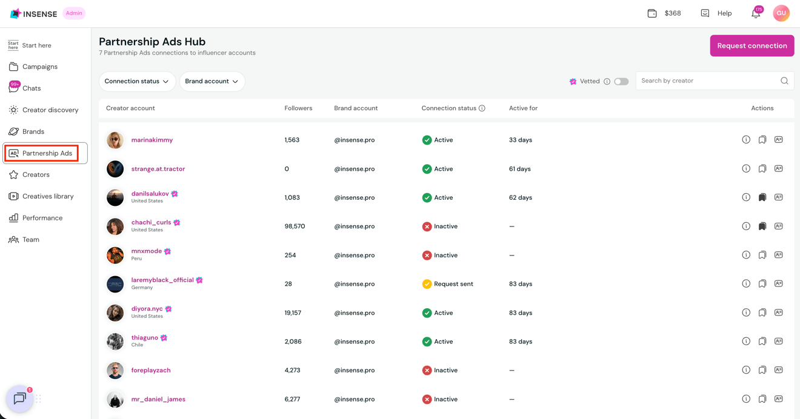
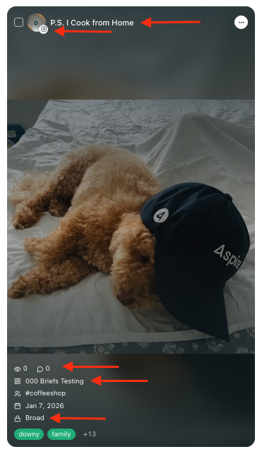
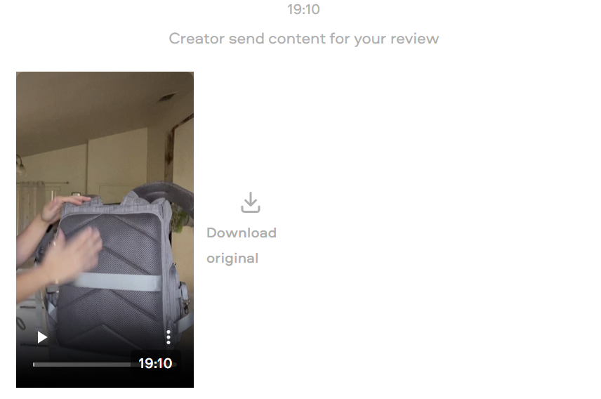

Ninety Days, One Surface
Where a brand downloads each creator's video, sees when its usage rights end, and offers the creator more time. The demo is Simple: 90 days of full usage, paid ads included, by contract. Most brands start from 30 days of organic rights, so the starting rights are a field per brand.
What came out of the Oct 2 call, and Julia's notes since
Julia and Tony, Oct 2, with the prototype on Tony's screen; then Julia's notes on Oct 5. Agreed means the owner clearly said yes. Proposed means someone floated it and nobody settled it, or Claude built it on a reading. Open names who has to answer. Tony's words are in the working notes, not in this public copy.
Agreed
- AgreedRights get their own tab. The Content tab stays as production. Tony, Oct 2: "we should not kind of affect the top page" and "Yes, I like it in its separate tab."
- AgreedThe Rights table is the right experience. Tony, Oct 2. Posted, rights end, status, download, open the post, Download all.
- AgreedThe status column stays, with the orange for ending soon. Julia asked for it, Tony: "I think it's fine", Oct 2.
- AgreedDownload all is one zip, and the tooltip says so. Julia, then Tony, Oct 2.
- AgreedNo calendar. Julia proposed dropping it, Tony: "Overkill", Oct 2.
- AgreedExtend is the version where the brand makes an offer. Tony, Oct 2: "I like that. I think this is great." The ask-the-team version is gone.
- AgreedHow long: 90 days, 1 year, Perpetual. Oct 2. Tony raised the third step ("1 year and like perpetual or something"), Julia priced it at $200, Tony: "I agree." The prototype labels it Perpetual.
- AgreedThe offer prefills by length: $75, $150, $200. Julia proposed, Tony: "I agree", Oct 2. Said before the type of rights came up; the next line settles the type.
- AgreedThe price table. Julia, Oct 5: "let's go with your pricing." Organic + paid: $75 for 90 days, $150 for 1 year, $200 for Perpetual. Organic only: $50, $100, $150. Claude proposed it when Julia asked which type the ladder prices: every earlier $75 bought paid use, and paid stays a small step up from organic. Tony has not seen the organic only column.
- AgreedA line by the offer names the usual price for the chosen length. Tony, Oct 2. The wording is Proposed (Claude, Oct 5): "we suggest $75", because no average has been measured yet.
- AgreedA Type of rights section: organic only, or organic plus paid. Never paid alone. Tony, Oct 2: "I would definitely, definitely do that."
- AgreedThe sheet says what the brand holds now. Tony, Oct 2. For example "You have 3 more days of organic + paid rights, until Feb 27."
- AgreedThe free-text box is a private note to the Benable team. Tony, Oct 2. The creator never sees it.
- AgreedOn the Content tab, a three-dot menu per card with Download and Extend rights. Extend opens the sheet on top of the page. Julia's idea, Tony built on it, Oct 2: "I would probably open it."
- AgreedWe send an email 7 days before rights expire. Julia, Oct 5: "we need to send an email 7 days before when a piece of content expires." First agreed with Katherine at Simple on Sep 25. Settled the same day by Julia: one email per creator, only to brands with paid rights, and at Simple it goes to Katherine. See "The 7-day email" below.
- AgreedWhen paid use ends before the organic rights do, the row turns "Ending soon" in the last 7 days of paid use, and the 7-day email goes out then too. Julia, Oct 6: "yes". So ads do not run past the end of paid use without a warning.
- Agreed"Extension requested" is now "Offer sent". Julia, Oct 6: "yes". The brand sees "Offer sent" and "Counter-offer".
- AgreedA row with an offer out or a counter waiting stays calm in its last 7 days. Julia, Oct 6: "that's ok as is". Its status shows the offer, not the clock.
- AgreedOffers go per creator: Extend opens all of a creator's videos that can take an offer, and the creator answers once for the set. Julia, Oct 6: "i think the offers should be for all their content", then "yes build it but give me a toggle back and forth". The OFFERS switch in the demo bar flips between Per creator and Per video.
- AgreedA per creator offer covers all of the creator's videos, at one price for the set: the ladder price ($75, $150, $200; organic only $50, $100, $150). The brand cannot leave a video out. The sheet shows the videos as mini pictures. A video that already has an offer out, a counter-offer waiting, or rights that never end is not in the new offer, and the sheet says so. Julia, Oct 6: "if there are 2 content, they jsut get both, can't unselect and forget about the $10 price", and earlier "show the mini pictures". This replaces the Oct 6 rule of $10 off for each video left out.
- AgreedHow a per creator offer works. Proposed by Claude, Oct 6. Agreed, Julia, Oct 6: "validate all the proposed". The brand can type its own amount. Selecting one of a creator's videos in the table and choosing Extend brings the creator's other videos along. Each video keeps its own end date and more time follows on from it. A counter-offer, a yes or a no covers the whole set, and each row of the set shows it ("Priya asks $100 for 2 videos · you offered $75"). Ticking rows across creators gives one price box per creator.
- AgreedA creator's videos sit next to each other in the table. Julia, Oct 6: "when possible put the content from the same person next to each other". In the default order each creator takes the place of their most urgent video; a column the brand sorts by keeps its own order (Claude's reading of "when possible").
- AgreedEvery tab sits on production's grey pane. Julia, Oct 6: the Rights tab like the Dashboard, and "Content is grey".
- AgreedThe 7-day email is in the first ship. Julia, Oct 6: "i don't need to pass it by tony". On Oct 2 Tony had called it V2, before the Sep 25 promise to Katherine came up.
- AgreedDownload stops when rights end. Julia, Oct 5: "sure." Extending brings the file back.
- AgreedSimple's $100 fee cap does not clash with extension offers. Julia, Oct 5: Simple already pays for 90 days of organic + paid rights, and an extension buys additional days. The contract's cap sits in the clause about securing those first 90 days.
- AgreedFor Simple, everything is computed from its 90 days. The starting rights are a field per brand, flagged for engineering. Julia, Oct 5. See "For engineering" below.
- AgreedThe count line above the table is gone. The extend sheet is wider, has more white space, and each section's small line sits under its title, above the control. Julia, Oct 5. The sheet's top is the title with what the brand holds right under it; the line about Katie's team sending the offer sits by the Send button (Claude's answer to "this top is a tad clunky").
- AgreedExtend is the one door for more time or for paid, on every live row. Tony floated it on Oct 2 ("Extend just becomes for anything"); Julia, Oct 6: "yes".
- AgreedEnding soon is the last 7 days. Julia, Oct 6: "yes 7 days". The same number Katherine was promised on Sep 25.
- AgreedRights are gone from the Dashboard tab. Julia, Oct 6: "yes". The Dashboard stays as production.
- AgreedMore time follows on from the current end date. Adding paid starts the day the creator says yes. Julia, Oct 6: "yes". On top, proposed by Claude on Oct 5 and 6 and agreed by Julia on Oct 6 ("validate all the proposed"): time already bought stays, and when paid use is already running at the yes, more paid follows on from where it ends.
- AgreedWhen a creator's videos end on different days, one email goes out 7 days before the first end, listing each video. Julia, Oct 6: "yes".
- AgreedEvery header sorts, Status included, and there is Copy link on each row and Copy links for a selection. Julia, Oct 6: "yes".
- AgreedCreators can counter-offer. The brand sees when a creator accepts or counters, and can accept or decline a counter. Julia, Oct 6: "we should show if the creator have accepted, and we should show if they've made a counter offer and let the brands accept or deny."
- AgreedTwo labels are fine: "Extend" on table rows, "Extend rights" in the Content menu and the sheet. Julia, Oct 6: "that's ok".
- AgreedDownloading files is free on the basic plan. Julia, Oct 6, confirmed once the term was explained. The basic plan is the default for brands without a contract like Simple's: 30 days of organic rights per video (Tony, Oct 2: "for most people it's 30 days organic").
- AgreedThe public site shows this version. Julia, Oct 6: "update the public site", then "push" after the counter-offer and per creator work. Published as content-handoff-study-2; the Oct 1 copy stays at content-handoff-study-1.
- AgreedJulia's polish notes, Oct 5. Download all sits on the pills line; ticking videos turns the table's header row into the selection bar, so nothing moves; filtering no longer jumps the page; the caret sits after the amount; a lock marks the private note; every hint starts from the creator's yes; after Send offer a green check page confirms what was offered. Oct 6: the Rights tab sits on the same grey pane as the Dashboard tab, and the green check page sits in the middle of the window.
Agreed Oct 6, built in the prototype
These were proposed. Julia, Oct 6: "validate all the proposed". Each line still says who first put it forward.
- AgreedNo video popup. Every action is on the table row. Julia, Oct 5: "I don't actually think we need this at all." Agreed Oct 6. Claude agrees and removed it: download, copy link, open the post and extend were already on the row. What the popup alone had: playing the video in place, the caption, a meter of the days, and the date a creator said yes (now a tooltip on the status). The amber "Rights ended" strip, removed on Oct 2 after Julia's "I don't like that popup", stays out too.
- AgreedHow a counter-offer looks. Proposed by Claude, Oct 6; agreed by Julia, Oct 6. Answers show on the Rights tab, including a no. The row turns "Counter-offer" with "Priya asks $100 · you offered $75" under it and a Review button. Review opens "Counter-offer on Priya's Reel": what you offered, what the creator asks, what accepting buys, what declining leaves, then Decline or Accept. Accepting shows a green check page. After a decline the row goes back to its status with "You declined $100" under it, and Extend is open again. A Counter-offer pill and the Rights tab's dot flag it. In the demo a counter is $25 more than the offer.
- AgreedThe line under each status shows the latest answer. Proposed by Claude, Oct 6; agreed by Julia, Oct 6: "Quinn said yes Feb 15 · $75", "You accepted $100 · Feb 24" after a counter, "Emery said no Feb 24", "Offer sent Feb 24 · $75".
- AgreedLabels "Organic only" and "Organic + paid", and a "Current" tag on what the brand holds. Tony's sketch, Oct 2, "or something". Built as two cards (Julia had said pills, Tony checkboxes); the two cards agreed by Julia, Oct 6.
- AgreedOffers come to the Benable team, who text the creator for now. Julia, Oct 2; agreed Oct 6. The creator app comes later.
- AgreedA new offer never erases what the brand already holds. Proposed by Claude, Oct 5; agreed by Julia, Oct 6. An accepted extension stays in force while a second offer is out.
- Agreed1 year ends on the same date the next year. Proposed by Claude, Oct 5; agreed by Julia, Oct 6. Feb 24, 2027 plus 1 year ends Feb 24, 2028.
- AgreedExtend on several selected videos at once, and one zip for a ticked selection. Proposed by Claude, carried over from Sep 30; agreed by Julia, Oct 6. Tony did not review them.
- AgreedFive small details in the prototype. Proposed by Claude, Oct 2 and Oct 5; agreed by Julia, Oct 6. (1) Rights end column: under each date, the time left and the type of rights, for example "in 9 days · organic + paid". (2) Rights end column after a creator says yes to Perpetual: "No end date" instead of a date. (3) Content tab, three-dot menu: when Extend cannot be used, its row is greyed and says why, for example "Offer sent" with "Sent Feb 24, no answer yet". (4) Status column: under "Offer sent", the day and amount, "Feb 24 · $75 · no answer yet". (5) Extend sheet, the two type of rights cards: a one-line description under each, "Use it on your own channels." and "Also run it as a paid ad."
- AgreedLater: instant approval when a creator has already named a price, and pricing by creator size. Tony, Oct 2. Julia, Oct 6: "yes would love that". Not in the prototype yet; for a later version.
Open, with an owner
- OpenWhat must a brand on the basic plan stop doing when its 30 days end? Julia and Tony, since Oct 5. The basic plan is the default for brands without a contract like Simple's: 30 days of organic rights per video. Nobody has decided whether reposts on the brand's socials must come down. Earlier lines point both ways (Tony, Aug 3; a Sep 3 sales email draft). The prototype tells brands nothing.
- OpenPaid on top of perpetual organic, for a brand that starts organic. Julia and Tony, since Oct 5. The prototype offers no door for it.
- OpenPaid added over organic days already bought. Julia, since Oct 6; Tony may want a say on the money. Quinn's Reel on Feb 24 in the demo: paid use to May 20, then organic to Aug 18. A paid 90 days added now runs May 20 to Aug 18 and lands on the organic days the brand already paid for, so the end date does not move. Three ways out: push the organic days after the new paid term (paid to Aug 18, then organic to Nov 16), start the paid term at the current end (Aug 18), or keep the overlap and price it as an upgrade. The prototype does the third without a lower price.
- OpenWhat a single download is called and in what format. Nisarg, per Julia on Oct 2.
- OpenHow fast Katie's team relays an offer and the creator's answer. Katie's team, since Sep 30.
- OpenCarried over from Sep 30, still open. Per campaign or a library across campaigns (Julia and Tony). Whether extensions carry a Benable fee (Tony). Whether
posted_atis reliable as the clock start (Nisarg).
For engineering: one field per brand
Flag for Nisarg (Julia, Oct 5). The rights a video starts with are a field on the brand or its campaign, never a constant. It has two values: how many days, and the type.
| Brand | Days | Type | Source |
|---|---|---|---|
| Simple | 90 | Organic + paid | PCA contract, signed Aug 10 |
| Basic plan, most brands | 30 | Organic only | Tony, Oct 2 |
Everything on the Rights tab derives from it: each end date, Ending soon, the "Current" tag in the extend sheet, and what an extension adds to. In the prototype it is one line, const BASE = { days: 90, type: 'paid' }, and changing it shows another brand.
Also new since the Sep 30 sketch further down: rights carry a type and can have no end; an extension is a chain of offers per video (sent, countered, accepted, declined by the creator, declined by the brand), where an accepted one stays in force while a new one is out; Download all needs a zip; download is off once rights end.
The 7-day email (Julia, Oct 5 and 6). A daily job, only for brands with paid rights. When a creator's rights, or the paid use on them, are 7 days from ending, the brand gets one email for that creator, listing the creator's videos and their end dates. The end date comes from the same field per brand plus any accepted extension, so an extended video is reminded 7 days before its new end. The recipient is a contact per brand: for Simple, Katherine. It would be the first brand-directed automation in the system. It is in the first ship (Julia, Oct 6).
The surface
The frame hides the prototype's black demo bar. Open the full prototype to switch the day (Dec 10, Feb 24, Apr 2), to make a creator say yes to a pending offer, or to reset. The version Tony reviewed is kept as surface.before-tony-oct2.html.
What is on it now
- AgreedDashboard and Content are production. Tony, Oct 2. The Content tab has one addition: three dots on each card with Download video and Extend rights (Julia's idea). A click on the card still opens the post on the platform.
- AgreedRights is one table. Tony, Oct 2. One row per video: posted, rights end, status, then Extend, copy link, open the post, download. Every header sorts. Filter pills by status. Tick rows to download, copy links or extend several at once (copy links agreed by Julia, Oct 6; downloading or extending several at once proposed by Claude and agreed by Julia, Oct 6). A counter-offer opens from the row with Review (proposed by Claude, agreed by Julia, Oct 6).
- AgreedDownload all is one zip of the videos on screen whose rights are live. Julia, then Tony, Oct 2. The prototype names the zip and marks the files downloaded; it does not build a real archive. A single download is the real demo file.
- AgreedThe extend sheet opens from a row, a selection or a Content card. Tony, Oct 2. What the brand holds now, type of rights, how long, the offer, a private note.
- AgreedNo popup. Julia, Oct 5; agreed Oct 6. A click on a row does nothing; the row is the whole surface.
| Status | When, for Simple | What the row says |
|---|---|---|
| Not posted yet | Draft approved, no live post | "Starts with the post". No file yet. |
| Active | Day 1 to day 82 of 90 | The end date, the days left and the type of rights. Extend and Download. |
| Ending soon | The last 7 days of the rights, or of paid use when organic rights run on after it | The days-left line, the status and the Extend button turn amber. |
| Ended | After the end date | "8 days ago". Download is off until the rights are extended (Julia, Oct 5); Extend stays. |
| Offer sent | After the brand sends an offer | "Feb 24 · $75 · no answer yet" under the status. What the brand already holds stays in force. |
| Counter-offer | The creator asks for a different price | "Priya asks $100 · you offered $75" and a Review button: Decline or Accept. |
| Extended | The creator said yes, or the brand accepted a counter | The new end date and the type of rights, with "Quinn said yes Feb 15 · $75" or "You accepted $100 · Feb 24" under the status. Extend stays available. |
| After a no | The creator said no, or the brand declined a counter | Back to its status, with "Emery said no Feb 24" or "You declined $100 · Feb 24" under it. Extend is open again. |
The 7-day email
Needed (Julia, Oct 5; first agreed with Katherine at Simple on Sep 25). Sent 7 days before rights expire, or 7 days before paid use ends when organic rights run on after it (Julia, Oct 6). One email per creator. Only brands with paid rights. At Simple it goes to Katherine. It does not exist in production: no brand-directed automation exists today. The wording is Proposed (Claude, Sep 30, updated Oct 5).
Hi Katherine,
Your usage rights on Quinn Hale's videos for Repair+ Holiday Hydration are about to end:
TikTok, rights end Feb 16
Reel, rights end Feb 19
After each date, any ads running that video should be paused, and its file can no longer be downloaded. If you haven't downloaded the files yet, now is a good time.
To keep using a video, extend the rights from the Rights tab: choose how long and make Quinn an offer.
Open the Rights tabTeam Benable
The Sep 30 study, kept as the record
Everything from here down was written before Tony's review, for the Sep 30 version (cards, a calendar, a video popup). Where it differs from the lists above, the lists above hold. Lines the call changed are marked.
The ask
Julia, Sep 30, thinking out loud. Her words are paraphrased, not quoted.
- One surface where the brand that got content (Simple) goes to download the file for each creator.
- The clock on the same surface. Rights run 90 days from the day the creator posts. Show when each one ends, "maybe even a little calendar widgety thing". She thinks a previous platform of Simple's, probably Insense, had something like it.
- An expired state. If the 90 days pass and the brand did nothing, the portal shows it the next time they log in.
- An email before it ends. "Let's say 5 days before." Sep 25 with Katherine the agreed number was 7. Both were switches in the Sep 30 prototype.
- Extend, two versions. V0 is one button to Katie's team, who find a price with the creator. V1 lets the brand pick a duration and a price, we pass it to the creator, the creator accepts, and the brand sees "90 more days". Julia goes back and forth. Both were built as a switch on Sep 30; Tony picked the offer version on Oct 2.
- Reuse the review popup. "This felt quite neat." Content on the left, the panel on the right. Reachable from the Content tab and from the creators table.
What was on it before Oct 2
- Cards, production anatomy. The Content tab already exists in production with filter pills and a card per post (capture 17, Aug; the VIEW switch shows it as is). Each card keeps creator and caption together and gains a bottom rights line with a small dot that changes colour only when the state earns it, plus an Extend button when rights are ending or ended. Hover shows Download. The card opens the popup.
- Rights calendar, right rail. Three versions behind the CALENDAR switch. Month: a dot per video on its day 90 (amber inside the reminder window, purple later, green extended, grey ended), today sits in a soft lavender circle, the selected day turns black, click a day to see just those videos and a black chip above the grid takes you back. Faces: the same grid with the creator's face in the cell. Timeline: an agenda by week with Today as a divider and an Extend button on every row. Under the month grid, "Ending next" with an Extend button per row and the promise line "We email you 7 days before each video's rights end."
- The popup is the review shell. Creators on the left with one line each, the video on the gradient stage with its caption, the right panel opens with a coloured state chip (Rights active, Ending soon, Rights ended, Extension requested, Extended), the heading, and a 90-day meter (posted, today, ends; the fill turns amber in the last week, grey after; an extension adds a green segment). Then the "Usage rights" list in the pre-check card's clothes, a Files block (video file with size, caption with Copy, live post link, a receipt line "You downloaded this file on Dec 12"), and the footer: Extend + Download video. Settled states show one quiet grey rail with a coloured dot instead of a washed banner.
- Download is a real file. The button hands over the original upload, named
Simple_Quinn_TikTok_2026-11-18.mp4(Aspire's convention: brand, creator, platform, post date). "Download all" walks the list one file at a time, the small version of bulk since no zip exists. - The table door. On the Dashboard tab, posted rows carry "View content" next to the kebab and a rights line in the Note column. It opens the same popup on that creator.
The states, as built on Sep 30 (90-day clock)
Derived from two dates per video: the day the post went live, and today. Nothing is stored beyond that except extension requests.
| State | When | Card line | Popup heading and footer |
|---|---|---|---|
| Not posted yet | Draft approved, no live post | Rights start when the post goes live | "Waiting for the post". No file yet. |
| Ready | Day 0 to day 82 | Rights until Mar 5 · 9 days left | "Ready to use". Extend · Download video |
| Ending | Last 7 days (or 5) | Rights end in 3 days · Feb 27 | "Rights end in 3 days". Same footer. Reminder email went out at day 83. The calendar dot turns amber. |
| Ended | Day 91 on | Rights ended Feb 16 | "Rights ended Feb 16", asks the brand to pause ads still running it. Download is gone; the one button is Extend. In V0 it asks Katie's team for a price; in V1 the brand picks a duration and an offer. |
| Extension requested | After the brand sends | extension requested | "Extension requested". Katie's team is asking the creator, we email when there's an answer. The rail shows the request date. |
| Extended | Creator accepted | Extended · rights until May 20 | "Extended". The rights list gains "Extended by 90 days, Quinn agreed Feb 15". Download is back. Extend again stays available. |
What was agreed, proposed, or open on Sep 30
- Agreed90 days of full usage, paid ads included, raw files. PCA contract, signed Aug 10. Identical clause in the Just Juice contract.
- AgreedThe clock starts the day the post goes live; light re-edits are fine. Katherine, Sep 25 walkthrough call.
- AgreedAn email 7 days before each video's rights end. Katherine asked (her ads team is in India), Julia agreed, Sep 25. Oct 2: Tony saw the automated version as later. Oct 5: Julia: the email is needed; see the top of the page.
- AgreedThe raw file is the review upload, "just the video". Tony, Sep 8. The file already reaches the portal; only the download step is missing.
- Open askDownload raw files in the portal, copy codes easily. Chiara at MD via Katie, Sep 18. Codes are not in this round: no field collects them yet.
- AgreedDownload disappears when rights end. Proposed by Claude on Sep 30; Julia, Oct 5: "sure."
- AgreedExtend is offered before the end too, not only after. Julia, Oct 6 (Extend on every live row). Sep 30 text: Claude, so the new period follows on without a gap. After the end, the new period starts at acceptance.
- DroppedThe calendar filters, it does not navigate. Dropped by Tony, Oct 2 ("overkill"). Sep 30: Claude. A click on a day narrows the grid to that day's videos; no separate calendar page.
- ReplacedBrand-facing price line "usually $50 to $100 per video". Replaced Oct 2 by the prefilled offer and the line under it. Sep 30: Claude, from the Aug 7 manual offer ($75 flat) and the contract cap ($100, pass-through, no markup). Tony prices extensions; this line is a placeholder until he does.
- AgreedV0 or V1: the offer version (V1). Tony, Oct 2. Sep 30: V0 is one route and one Slack ping to Katie's team. V1 needs a request object, a creator-side accept screen and a payout, but it turns the gate into the upsell Tony framed on Aug 3.
- OpenPer campaign or a library. Julia and Tony. The prototype now sits in its own Rights tab on the campaign (Tony, Oct 2). Chiara's benchmark (Social Cat) is one Content section across campaigns that survives cancellation.
- AnsweredWho may download. Oct 6, Julia: download is free on the basic plan. Sep 30 text: Tony, since Aug 3: raw files on the paid side. Simple, Just Juice and PCA hold rights by contract. For gifted-only brands the same button could read "Get this file with 90 day ad rights" (concept G, Sep 21).
What the field does
Nobody has a calendar. Rights clocks are rare next to the file; countdowns live on ad codes and on stay-live windows. Every image below was opened and read.





- Rule 1. The download sits next to the video, one icon or button, everywhere. Nobody hides it behind a menu except Billo's crop menu.
- Rule 2. Clocks are shown as a status word plus a date or a day count, never a calendar. On Sep 30 a calendar looked like open lane; it was dropped on Oct 2.
- Rule 3. Expiry reminders exist as workflows (Aspire) or "automatic notifications" (Insense) but no one documents the lead time. On Sep 30 the plan was to say "7 days before" on the surface itself; the email is now in the first ship (Julia, Oct 6).
- Rule 4. Extension is a re-request (Billo "Extend permissions", Insense "create a new campaign"). None of them price it in the UI. V1 would be first.
For engineering, as sketched on Sep 30
PROPOSED, Claude. Grounded in the Sep 21 backend map (HEAD 35eb286b3). Not sized with Nisarg. Since Oct 2: the first ship is the offer version (the right-hand card), Download all needs a zip, rights need a type (organic, or organic plus paid) and a no-end option, and the reminder job is in the first ship (Julia, Oct 6).
V0 (download, clock, ask Katie's team)
- Download route. One endpoint per submission asset that redirects to a presigned GET with
Content-Disposition: attachmentand the naming convention. Same pattern as the brief PDF export. - Rights fields.
rights_daysper campaign (90 for PCA, Just Juice; 30 default),rights_start_atper live post = the post date the creator submits (submission_items.posted_at exists) or the tracked live post's timestamp. End date is derived. - Reminder job. Daily: every piece whose end date is in
remind_daysemails the brand once. First brand-directed automation in the system. - Extension request. A row (piece, days, note, status) plus a Slack ping to Katie's team. Resolution by admin: accepted with a new end date, or declined.
V1 adds (secure more rights)
- Offer on the request (amount, pass-through, no markup per contract), creator-side accept or counter, payout on accept through the existing $50 direct payout rail.
- Creator SMS or app screen for the offer: reuses the Aug 24 rights SMS language, $75 line.
- Invoice line "Content rights, creator pass-through" on the monthly Stripe invoice (how-to-bill, Aug 10).
Reused as is
- The three-pane review shell (v45), the Content tab card anatomy, the Invited Creators table, the production filter pills.
Open decisions on Sep 30, by owner
The current list is "Open, with an owner" near the top. Four of these have closed: the offer version (Tony, Oct 2), the surface, which is the Rights tab (Tony, Oct 2), the email lead time (7 days, Julia, Oct 5), and download after the end date (it stops, Julia, Oct 5).
- Julia: Per campaign or a library across campaigns. Closed since: V0 or V1 (the offer version, Tony, Oct 2), the email lead time (7 days, Julia, Oct 5), and download after the end date (it stops, Julia, Oct 5).
- Tony: the extension price posture (creator-set, $75 flat, or a range; since Oct 2 the offer prefills $75 / $150 / $200) and whether extensions carry a Benable fee. Whether gifted-only brands see the button locked as an upsell (answered Oct 6, Julia: download is free on the basic plan).
- Katie's team: how a request reaches them (Slack ping, admin queue) and the time to an answer. Who pauses ads on the brand side when rights end.
- Nisarg: effort on the download route, rights fields, the reminder job (in the first ship, Julia, Oct 6). Whether
posted_atfrom the creator's submission is reliable enough as the clock start. - Katherine (Simple): whether the 7-day email should go to her, her ads team, or both. Closed: Katherine (Julia, Oct 5).
content-handoff-study/surface.html (the surface), index.html (this page), assets/ (captured chrome CSS from v47, the review popup styles, demo clips, evidence shots). Launch entry content-handoff-study, port 4299. Demo footage and names are fictional. The working log stays in the local folder.